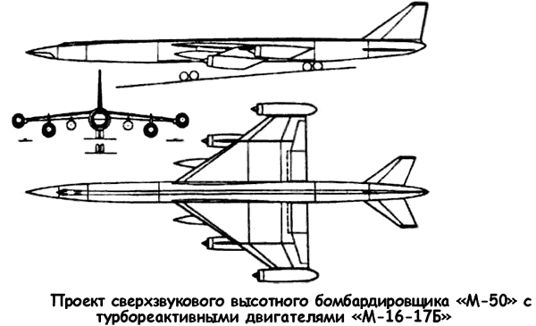
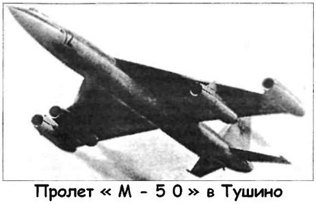
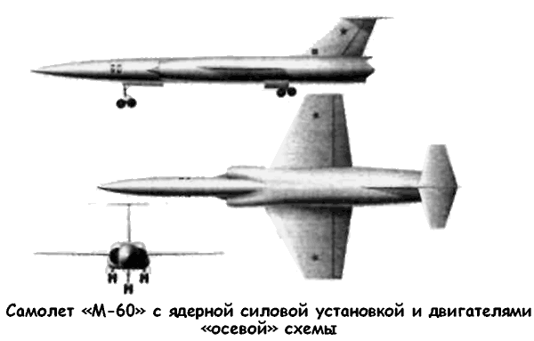

Сверхзвуковые тяжелые самолеты Владимира Мясищева
Дьявольская логика «гонки вооружений» подталкивала руководство Советского Союза к принятию «адекватных мер». Огромные затраты на реализацию программ создания тяжелых сверхзвуковых самолетов «Валькирия» и «Черная птица» убеждали в том, что военно-воздушные силы США не шутят, собираясь поставить на вооружение летательные аппараты нового поколения. Соответственно, и в Советском Союзе должны были появиться самолеты со сходными характеристиками и возможностями.
Если взглянуть на историю развития тяжелой авиации в Советском Союзе, то обнаружится удивительный пробел После принятия на вооружение в начале 1950-х годов бомбардировщиков «Ту-95», «М-4» и «ЗМ» и до конца 1980-х в СССР не вошел в строй ни один новый самолет этого класса.
Лишь в последнее время образовавшийся вакуум заполнили «Ту-160». Неискушенный человек может подумать, что, кроме Андрея Туполева (ОКБ-156), никто в нашей стране не занимался авиацией стратегического назначения. И будет, разумеется, не прав. В течении упомянутого тридцатилетия были разработаны и доведены до «железа» несколько блестящих и совершенно фантастических проектов, которые намного превосходили все, что имелось у американцев.
Работы по созданию межконтинентального стратегического бомбардировщика нового образца проводились в ОКБ-23 Владимира Мясищева, в ОКБ-256 Павла Цыбина, в группе Роберто Бартини и группе Георгия Бериева.
Наибольших успехов на этом поприще добилось конструкторское бюро, руководимое Владимиром Михайловичем Мясищевым. После нескольких лет вынужденного перерыва 24 марта 1951 года ОКБ-23 возобновило работу специально для создания стратегического бомбардировщика «М-4» (в проекте — «М-25»). Однако это была пока еще дозвуковая машина, а Мясищев мечтал о большем Проект летательного аппарата нового типа начал разрабатываться уже через год после организации ОКБ. «Зазвуковой» бомбардировщик «М-32» с четырьмя турбореактивными двигателями «ВД-5» стал первым инициативным предложением ОКБ-23 Мясищева по созданию сверхзвукового самолета. Экипаж 5 человек При взлетном весе 180 тонн его крейсерская скорость должна была составлять до 11001200 км/ч, а максимальная -1350 км/ч. Ожидалось, что дальность будет в пределах 7000–8000 километров, а практический потолок — 14–15 километров.
Вслед за «зазвуковым» «М-32» по инициативе Мясищева в ОКБ-23 разрабатывался сверхзвуковой бомбардировщик «М-34» — максимальная скорость 1850 км/ч, с практическим потолком 19 350 метров и дальностью 8700 километров.
Поскольку заказа на эти две машины получить не удалось, проектирование было прекращено. 30 июля 1954 года вышло официальное правительственное постановление на разработку сверхзвуковой межконтинентальной авиационной стратегической системы, способной поражать цели на территории США. Первоначально речь шла о создании составного авиационного комплекса, включающего сверхзвуковой самолет-носитель, рассчитанный на скорость 1,5–2 Маха, и ударный подвесной бомбардировщик, вооруженный ядерной бомбой. Радиус действия комплекса должен был обеспечивать поражение целей в США без захода самолета-носителя в активную зону поражения средств американской ПВО, а дальность полета самолетаносителя и подвесного самолета — их возвращение на базы в СССР.
В соответствии с правительственным постановлением в ОКБ Мясищева началась разработка «Разъемного дальнего бомбардировщика 50», состоящего из ударного самолета и носителя с четырьмя турбореактивными двигателями конструкции Александра Микулина Согласно заданию, «М-50» должен был развивать максимальную скорость 1800 км/ч (при крейсерской 1500–1600 км/ч) на высотах 14–15 километров. Практическая дальность полета с бомбовой нагрузкой 5000 килограммов оценивалась в 13 000 километров.
ОКБ выпустило эскизный проект, но 19 июля 1955 года вышло очередное постановление правительства, изменившее направление работ по теме «50». Теперь требовался «чистый» дальний бомбардировщик с повышенной крейсерской скоростью, рассчитанный под четыре турбовентиляторных двигателя «НК-6» или турбореактивных двигателя «ВД-9А».
А мартовским постановлением 1956 года предусматривалась установка нового двигателя «M-16-17».
Ведущим конструктором новой машины назначили Георгия Назарова.
Оптимальная аэродинамическая компоновка самолета выбиралась по результатам испытаний 39 моделей в аэродинамических трубах ЦАГИ. В ходе проектирования рассматривались такие схемы, как «утка» и «бесхвостка». Но конструкторы остановились на классической схеме с треугольным крылом. Причиной такого выбора стало отсутствие необходимых методик расчета указанных выше компоновок, а также необходимость сокращения времени проектирования.
Одним из первых серьезных исследований, связанных с проектом «М-50», стал поиск оптимального размещения двигателей. Требовалось обеспечить наилучшее расположение воздухозаборников, минимизировать аэродинамическое сопротивление и максимально упростить конструкцию. Помимо продувок в аэродинамических трубах, проводились летные испытания крупногабаритных моделей, запускаемых с катапульты или сбрасываемых с самолета-носителя. Помимо этого, использовались методы математического моделирования на ЭВМ. В конце концов решили два двигателя разместить на пилонах под крылом, а два — на концах крыла.
Особой отличительной чертой «М-50» стало то, что на нем буквально все — от двигателей до покрышек колес — проектировалось и делалось наново, без опоры на существовавшие аналоги. Разработка и внедрение новых конструкций, технологий и материалов потребовали скоординированной работы почти 20 ОКБ и НИИ, а также более 10 крупных заводов разных министерств и ведомств. Новым был и подход к проектированию фюзеляжа и крыла, собранных из крупногабаритных панелей. В них обшивка со стрингерами или поясами шпангоутов выполнялась прессованием из титановых сплавов, что позволило получить выигрыш по массе и увеличить производительность труда. Для этого, по заданию ОКБ и АН СССР, были созданы специальные мощные прессы.
В конструкции шасси повторили принцип, проверенный на «М-4» и «ЗМ», — тандемная схема с раздвижной передней опорой. Весьма оригинально решалась проблема торможения на пробеге — с помощью гидропривода из фюзеляжа выдвигались четыре похожие на лыжи стальные балки. При их трении о бетон образовывались целые снопы искр, но такой способ торможения оказался очень эффективным.
На «М-50» впервые в СССР использовалась автоматическая система регулирования положения центра тяжести в полете путем перекачки топлива между фюзеляжными и крыльевыми группами кессон-баков. Необходимость в этом возникла потому, что при переходе на сверхзвуковую скорость изменяется характер обтекания крыла, приводя к появлению пикирующего момента. Новая система позволила уменьшить площадь оперения.
Проблематичным оказалось создание силовой установки.
Так как самолет должен был совершать длительный полет на сверхзвуковой скорости, требовались двигатели с тягой без форсажа не менее 17000 килограммов. Наиболее подходящим оказался двигатель «M-16-17» («РД-16-17»), разработанный в ОКБ Прокофия Зубца.

В конечном виде бомбардировщик «М-50» выглядел следующим образом. Он был выполнен по классической схеме с треугольным высокорасположенным крылом и стреловидным хвостовым оперением. Фюзеляж — полумонокок цилиндрической формы диаметром 2,95 метра при общей длине самолета 57,48 метра. Технологически он делился на следующие агрегаты: передний отсек с носовым обтекателем; гермокабину экипажа; передний топливный отсек; среднюю часть с отсеками для шасси, топливных контейнеров (кессонбаки), спецгрузов (бомб) и центропланом крыла; хвостовую часть с топливными отсеками и парашютным контейнером и узлами крепления оперения. Фонарь кабины был снабжен передним остеклением из двойных наклонных плит закаленного стекла и боковыми иллюминаторами. Бомбовый отсек длиной более 10 метров закрывался створками.
На самолете практически отсутствовали выступающие части (надстройки), за исключением фонаря кабины пилотов.
Проводка системы управления, агрегаты и коммуникации располагались по верху и по низу фюзеляжа и закрывались легкосъемными гаргротами.
Крыло свободнонесущее, треугольной формы в плане, с изломом по передней кромке, размах — 25,1 метра. Большой угол стреловидности корневой части крыла (57°) позволял увеличить строительную высоту бортовой нервюры и обеспечить требуемый запас прочности. В концевой части крыла угол стреловидности — 54°. Технологически крыло делилось на кессон, переднюю часть кессона с носками, хвостовую часть кессона, консоли с носками и хвостовыми частями, пилоны двигателей и обтекатели крыльевых стоек. Кессон и его передняя часть служили топливными баками. Основной силовой элемент крыла — кессон — состоял из трех лонжеронов, прессованных панелей и нервюр.

Механизация крыла состояла из щелевых закрылков типа ЦАГИ, расположенных на внутренних частях консолей крыла. Элероны имели аэродинамическую компенсацию. На верхней поверхности крыла установлены аэродинамические гребни, являющиеся как бы продолжением пилонов двух соответствующих двигательных гондол. Остальные два двигателя располагаются в гондолах, закрепленных на торцевых концах крыла Такое расположение четырех двигателей позволило, с одной стороны, получить аэродинамически «чистое» крыло, обладающее более высокими характеристиками, и, разгрузив его, соответственно уменьшить массу. С другой стороны, использованная компоновка дала возможность применить более эффективные лобовые воздухозаборники.
В конструкции самолета широко использованы алюминиевые и титановые сплавы.
Бомбовое вооружение максимальной массой до 30 тонн размещалось в крупногабаритном грузоотсеке, где предполагалось также подвешивать и управляемую сверхзвуковую крылатую ракету «М-61» со складными плоскостями, создававшуюся в ОКБ Мясищева и имеющую дальность пуска до 1000 километров. Одно время прорабатывалась и возможность оснащения самолета тяжелой крылатой ракетой «РСС» конструкции ОКБ-256 Цыбина. На первом опытном самолете оборонительное вооружение отсутствовало, на серийных самолетах предполагалось применение кормовой пушечной установки с дистанционным управлением. По предложению Никиты Хрущева рассматривался также беспилотный вариант «М-51», в фюзеляж которого был вмонтирован ядерный боеприпас большой мощности, но этот проект остался на уровне общего обсуждения.
Первый образец сверхзвукового бомбардировщика «М-50А» поднялся в воздух 27 октября 1959 года. Этот полет продолжительностью 35 минут прошел успешно.
Так как на момент начала испытаний двигатели конструкции Зубца еще не были доведены, то на прототип установили четыре менее мощных мотора «ВД-7Б» тягой по 9750 килограммов конструкции ОКБ Владимира Добрынина.
Для увеличения тяги до 14 000 килограммов два подкрыльевых двигателя «ВД-7» оборудовали форсажными камерами. Однако это не помогло: «М-50» так и не преодолел скорости звука, «упершись» в предел — 0,99 Маха. 9 июля 1961 года «М-50» был продемонстрирован широкой публике на параде в Тушино. После этого на Западе ему присвоили код НАТО «Bounder» («Беспредельщик») и даже поговаривали, что этот бомбардировщик скоро пойдет в серийное производство.
Однако осенью 1960 года Владимира Мясищева назначили начальником ЦАГИ, а ОКБ-23 расформировали. Коллектив переподчинили Владимиру Челомею, создававшему космическую технику. «М-50А» передали в музей в Монино.
Повсеместное увлечение баллистическими ракетами, казалось, «поставило точку» на стратегической авиации.
Но до расформирования ОКБ работы по бомбардировщикам шли полным ходом. Сразу же после «М-50» началось проектирование его модификации «М-52», которая должна была обеспечить проектные дальность и скорость.
Эта разработка была связана с постановлением Совмина № 867–408 от 31 июля 1958 года о создании авиационной системы дальнего действия для поражения площадных и наземных целей.
В состав системы, получившей обозначение «М-52К», входили: сверхзвуковой самолет «М-52», крылатая ракета «Х-22» и системы управления и наведения «К-22У».
«М-52» проектировался в двух вариантах: двухместном боевом и трехместном учебно-тренировочном. В первом варианте летчик и штурман размещались рядом, во втором — справа от проверяемого располагался инструктор, а рабочее место штурмана перенесли вперед, за приборную доску летчиков. Для спасения экипажа в случае аварийного покидания самолета во всем диапазоне скоростей предназначались катапультные кресла с реактивными ускорителями, выстреливавшиеся вверх.
Первый вариант «М-52» предлагался с размещением всех двигателей на пилонах под крылом. Но окончательно остановили выбор на схеме самолета «М-50». На входе воздухозаборных устройств установили центральные тела, и это еще сильнее подчеркивало, что самолет рассчитан на большие сверхзвуковые скорости.
Вооружение носителя, кроме свободнопадающих авиабомб калибром до 5000 килограммов, реактивных торпед «РАТ-52М» и морских мин, должно было включать две ракеты «Х-22», а впоследствии и ракеты проекта «44» класса «воздух — поверхность», размещавшиеся по бокам фюзеляжа.
В случае чисто ракетного вооружения в бомбоотсеке планировалась установка дополнительного топливного бака.
На «М-52», как на «пятидесятке», согласно требованиям ВВС предусматривалось размещение кормовой стрелковой установки «ДБ-52» с пушками «АО-9М» калибра 23 миллиметра и прицельной станцией «Криптон» с вычислительным блоком «ВБ-17».
От цельноповоротного вертикального оперения отказались, заменив его традиционным килем с рулем направления.
На вершине киля поместили дополнительное балансировочное горизонтальное оперение, отклоняемое только вниз, на кабрирование.
Самолет рассчитывался под четыре двигателя «М16-17Б» с взлетной тягой по 18 500 килограммов. Не исключалось, однако, и использование форсированных «М16-17Ф» или «НК-6М». Предполагалось установить в носовой части систему дозаправки топливом в воздухе. При установке средней сбрасываемой тележки допустимый взлетный вес составлял 248 тонн.
В момент взлета дополнительную тягу должны были давать ускорители на ЖРД «СЗ-42М» конструкции Доменика Севрука, развивавшие тягу до 17 тонн в течение одной минуты.
На передней тележке шасси для сокращения пробега предусматривалась установка тормозной лыжи.
Однако и в этом случае, несмотря на всю экзотичность предложенных технических решений, проект самолета не соответствовал заданным требованиям и нуждался в доработках.
В апреле 1959 года ОКБ-23 предъявило заказчику макет «М-52К», который не был одобрен государственной комиссией.
ОКБ пришлось доработать носитель. На крыле предложили сделать геометрическую крутку с наплывами в концевых частях. На внешних мотогондолах установили «ласты» и улучшили компоновку крылатой ракеты «Х-22». Эти мероприятия способствовали увеличению аэродинамического качества на околозвуковых скоростях.
В период с 29 мая по 19 июня 1959 года состоялась защита эскизного проекта «М-52К». В своем заключении заказчик вынужден был констатировать, что «…самолетноситель системы М-52К выполнен как незначительная модификация стратегического бомбардировщика М-50 с сохранением схемы и без существенных изменений размеров и веса. Это приводит к невозможности использования его с аэродромов 1 класса, имеющихся вблизи возможных театров военных действий, а также к чрезмерному удорожанию системы и усложнению ее эксплуатации. По своим характеристикам самолет не соответствует постановлению Совмина и требованиям ВВС».
Как оказалось, сложнейшей задачей при создании носителя «М-52» было обеспечение требуемой дальности. При расчетном полетном весе 165 тонн с двигателями «М16-17Б» радиус действия самолета в варианте бомбардировщика не превышал 4100 километров. По расчетам ОКБ, при полете с двумя ракетами этот параметр не превышал 2300 километров, что было почти в два раза меньше заданного постановлением Совмина. В случае дозаправки носителя топливом на пути к цели до веса 215 тонн практический радиус действия возрастал до 3750 километров, но все равно не соответствовал заданию. Лишь при полете с одной ракетой радиус превышал нижнюю границу задания — 4050 километров.
В двух последних вариантах система «М-52К» могла развивать крейсерскую скорость 1700–1800 км/ч с одной ракетой на расстоянии 1800 километров от аэродрома вылета, а с двумя ракетами — лишь на удалении 2960 километров.
Таким образом, свыше половины этого пути «М-52К» должен был проходить на высотах от 5500 до 8500 метров на дозвуковых скоростях 800-1000 км/ч. Остальной участок приходился на режим разгона до скорости в 1,7 Маха с набором высоты.
Заказчик также отмечал, что реально практический радиус действия системы не будет превышать 3200 и 2300 километров с одной и двумя ракетами соответственно, так как взлетный вес из-за недостаточной прочности шасси ограничен 165 тоннами. Указывалось также на недостаточную тяговооруженность «М-52К».
Острая полемика развернулась по вопросу базирования «М-52К». ОКБ-23 ориентировалось в соответствии с заданием на сверхклассные аэродромы с длиной взлетно-посадочной полосы не менее 3000 метров. Военные же требовали сократить длину разбега до 2500 метров. В результате для взлета с перегрузочным весом конструкторы предложили применить среднюю сбрасываемую стойку с самоориентирующейся четырехколесной тележкой шасси. Она могла воспринимать до 85 тонн взлетного веса, обеспечивая перед отрывом от земли угол атаки 13,5° при скорости 430 км/ч.
Предусматривалось спасение средней стойки на парашюте для ее повторного использования. В случае применения стартовых ускорителей дистанция разбега не должна была превышать 2000 метров.
Рассматривался также вариант точечного старта с помощью ускорителей общей тягой до 360 тонн. Наклон ускорителей под углом около 53° к горизонту мог обеспечить отрыв самолета с места, разгон в течение 15 секунд до скорости 550 км/ч и набор высоты 300 метров на дистанции 1500–2000 метров. Ожидалось, что применение «точечного старта» при рассредоточении мест базирования резко повысит живучесть дальней авиации в условиях внезапного нападения вероятного противника. Взлетный вес системы «М-52К» в этом случае доводился до 217 тонн. Для сокращения послепосадочного пробега предлагалось использовать аэрофинишер, по типу того, которые применяются на авианосцах.
Несмотря на очевидные недостатки системы, был запланирован выпуск пяти самолетов, вооруженных ракетами «Х-22». Две машины предписывалось выпустить в 1960 году и три — в 1961 году. Несколько позже руководство Министерства обороны обратилось в правительство с предложением ограничить выпуск тремя машинами, использовав их для накопления опыта по испытанию и эксплуатации системы «М-56К», не уступающей американскому бомбардировщику «ХВ-70 Валькирия».
Сборка «М-52» продолжалась в 1960 году, но сильно затянулась из-за отсутствия двигателей «М-16-17Б». В последующем, ввиду того, что конструкторы не справились с заданием, было принято решение о прекращении всех работ по этой машине.
С 1958 года в ОКБ-23 разрабатывался проект сверхзвукового пассажирского самолета по схеме «утка» с двухкилевым оперением и двигателями «РД16-23». Проектирование лайнера в значительной степени опиралось на результаты научно-исследовательских и опытно-конструкторских работ, выполненных в ходе создания бомбардировщиков «М-50» и «М-52».
«М-53» представлял собой высокоплан с четырьмя двигателями в двух подкрыльевых гондолах и трехстоечным основным шасси (длина самолета — 51,3 метра, высота самолета — 10,8 метра). Крыло — с двойной стреловидностью, размах — 27 метров. Самолет рассчитывался на полет со скоростью 1800–2000 км/ч на высоте 13–16 километров.
Дальность в перегрузочном варианте с полным запасом топлива и 50 пассажирами (нагрузка 5 тонн) оценивалась в 6500 километров. Максимальная же коммерческая нагрузка доходила до 12 тонн.
Мезосферные войны Лишь на бумаге и в моделях существовал и другой проект ОКБ-23 — сверхзвуковой стратегический бомбардировщик «М-54». От «М-50» он отличался крылом с небольшой стреловидностью по задней кромке. Он проектировался по схеме «бесхвостка» с четырьмя турбореактивными двигателями на пилонах под крылом, повторяя в масштабе компоновку американского «В-58». На нем также анализировались различные варианты расположения мотогондол.
Работы американцев по «трехмаховому» бомбардировщику «ХВ-70» не прошли незамеченными в СССР. В конце 1957 года, первоначально в инициативном порядке, в ОКБ-23 начались работы по стратегической авиационной системе «М-56», предполагавшей создание ударного стратегического самолета-ракетоносца «М-56К» и разведчика «М-56Р».
В проектировании находились четырех- и шестидвигательные варианты самолета В отличие от более «консервативных» схем «М-50» и «М-52», при проектировании «М-56» конструкторы остановилось первоначально на схеме «бесхвостки» с треугольным крылом, прорабатывались варианты с двигателями на пилонах под крылом и в едином пакете под средней частью крыла. Постановление по стратегической авиационной системе «М-56» вышло 31 июля 1958 года.
Ударный вариант «М-56К» задавалось проектировать в варианте ракетоносца, вооруженного ракетами «44».
Для силовой установки «М-56» первоначально были выбраны двигатели типа «НК-10Б», проектировавшиеся в ОКБ Николая Кузнецова, с максимальной взлетной тягой 24 000 килограммов.
Уже к ноябрю 1958 года ОКБ-23 получило первые расчеты по различным вариантам компоновок «М-56». При взлетной массе 210 тонн расчетная практическая дальность без подвесок или контейнеров получалась равной 10 070 километров. Крейсерская скорость полета с подвесками находилась в пределах 2500–2700 км/ч, максимальная — до 3200 км/ч. Для увеличения дальности полета предусматривалась подвеска под самолетом большого аэродинамически вписанного в компоновку машины топливного бака или контейнера под крупный термоядерный боеприпас.
Большое внимание при проектировании «М-56» уделялось аэродинамическому совершенству самолета на всех режимах полета. Как известно, при переходе за скорость звука аэродинамический фокус крыла смещается назад, что приводит к резкому изменению запаса продольной устойчивости. Проблему можно решить выбором аэродинамической компоновки крыла (применение «неплоского» крыла со сложной срединной частью, как это было в дальнейшем выполнено на серийном варианте пассажирского самолета «Ту-144»), это обычно дополняется системой перекачки топлива в полете из одной группы баков в другую, смещая центр масс и добиваясь требуемых балансировок. На «М-56» решено было пойти другим путем — введением в схему «бесхвостой» плавающего горизонтального оперения. На дозвуковом режиме такое оперение работает во флюгерном режиме, не создавая ни компенсирующих сил, ни моментов. На сверхзвуковом режиме оно заклинивается на определенный угол, при этом исходная схема самолета превращается в схему «утка», и в этом случае аэродинамические силы на плавающем оперении смещают фокус самолета вперед, восстанавливая требуемую балансировку.
При этом управление по каналу тангажа ведется с помощью элевонов, но со значительно меньшими расходами рулей, что позволяет получать приемлемые крейсерские значения аэродинамического качества на сверхзвуке.
При проектирование силовой установки «М-56» значительное внимание уделялось совершенствованию аэродинамики силовой установки. Если первоначально проекты «М-56» базировались на использовании подкрыльевых или крыльевых осесимметричных воздухозаборников с центральным регулируемым конусом, то затем перешли к плоским воздухозаборникам с горизонтальным регулируемым клином под центральной частью крыла в едином блоке. В дальнейшем перешли к плоским крыльевым несущим мотогондолам, дававшим некоторую прибавку аэродинамического качества на крейсерском режиме полета.
В 1959 году ОКБ-23 в проекте «М-56» переходит на шесть альтернативных двигателей «ВК-15», проектировавшихся в ОКБ-117 Владимира Климова. Грузоотсек самолета перерабатывается под баллистическую ракету воздушного базирования «45А» с дальностью полета в 2000 километров.
При этом радиус действия системы получался порядка 7000–8000 километров.
Процесс проектирования «М-56» продолжался практически до прекращения работы ОКБ-23 в области авиации. Последние варианты прорабатывались под двигатели типа «РД16-17М» («М16-17М») разработки ОКБ-16 Прокофия Зубца, с максимальной тягой 21 700 килограммов, и «РД17-117Ф» разработки ОКБ-117, с максимальной тягой 12500 килограммов. 1 марта 1960 года Владимир Мясищев подписал эскизный проект по стратегической ударной системе «М-56К» с шестью двигателями. Площадь крыла самолета-носителя определялась в 450 м2, взлетная масса — в 220 тонн, масса пустого самолета — 63,35 тонны, весовая отдача по топливу достигала 68,4 %. Был построен натурный макет нового самолета, а также летающие радиоуправляемые модели бомбардировщика, которые продемонстрировали хорошую устойчивость и управляемость самолета.
На базе «М-56» прорабатывался его пассажирский вариант «М-55». Рассматривались три варианта: «55А», «55Б» и «55В». Первый из них был рассчитан на 40 пассажиров, второй — на 85. «М-55А» имел два двигателя, «М-55Б» — четыре.
Последний из них представлял собой высокоплан с передним горизонтальным оперением. Под треугольным крылом, по бокам фюзеляжа в двух пакетах размещались шесть двигателей «ВК-15М».
Самолет рассчитывался на скорость 2300–2650 км/ч на высотах до 22 километров. В перегрузочном варианте (взлетный вес 245 тонн) он мог эксплуатироваться на маршрутах протяженностью 6000–6500 километров с 5 % запасом топлива.
При этом число пассажиров не превышало 50. Длина разбега составляла 3500 метров, послепосадочного пробега — 1500–1700 метров. С сотней пассажиров на борту дальность сокращалась до 4000 километров.
«М-53» и «М-55» были первыми советскими проектами пассажирских сверхзвуковых самолетов. Низкое аэродинамическое качество планера и высокие удельные расходы топлива не позволяли на рубеже 1950-1960-х годов создать сверхзвуковой лайнер, конкурентоспособный дозвуковым машинам.
Впоследствии материалы по «М-56» были переданы в другие ОКБ, в частности в ОКБ-156 Андрея Туполева, где были использованы при разработке «Ту-135».

Под шифром «М-60» в ОКБ Мясищева разрабатывался самолет с ядерной силовой установкой, которую проектировал коллектив Архипа Люльки.
Мясищев, совместно с конструкторами СКБ-500 и ЦИАМ, пришел к выводу, что на этих машинах должны стоять турбореактивные двигатели с температурой воздуха перед турбиной не менее 1400°К. Основным критерием выбора схемы расположения силовой установки являлось максимальное ее удаление от экипажа. Кроме того, размещение двигателей в фюзеляже значительно облегчало передачу к ним тепла от реактора. Существовал еще один почти невероятный проект — стратегический бомбардировщик в виде летающей лодки «М-70». Этот самолет, приводнившись в заданной точке океана, мог пополнить запас топлива от всплывшей субмарины и продолжить путь.
Все эти проекты не вышли за стадию эскизного проектирования.